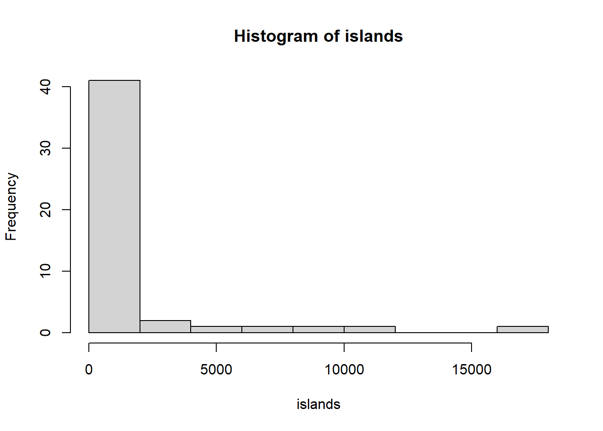
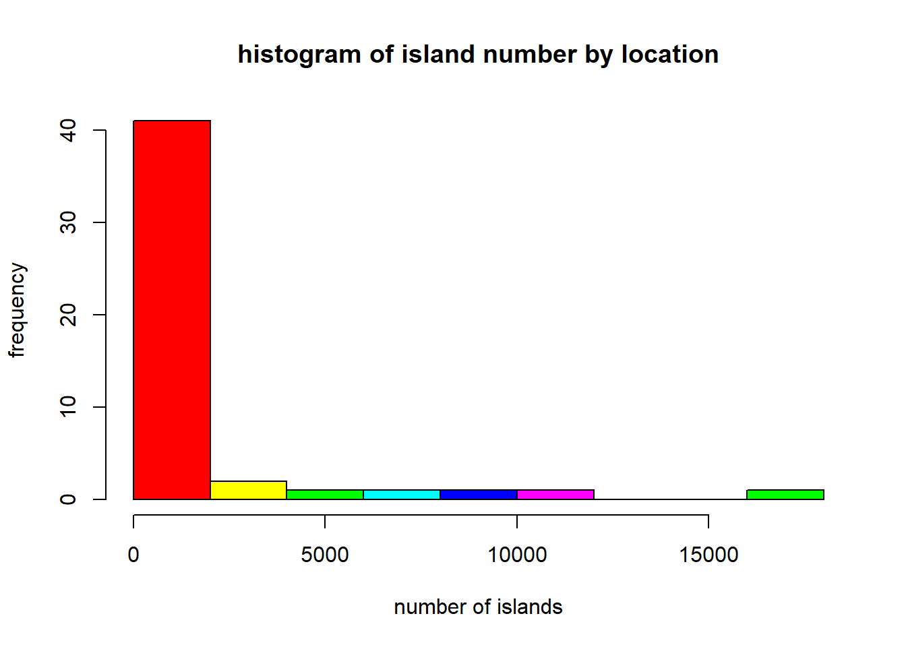

before we can run R we need to install it. We’ll also install Rstudio This video shows how to install R and Rstudio on your pc/mac/linux youtube tutorial
If you are on a BCI IT managed windows machine you should be able to install R and R studio without needing admin access. A recent version of R studio is available in the software centre (downloading R studio from the internet requires admin access) However, you will need to install R separately as the version on the software centre is not up to date
RStudio has 4 panels
RStudio main interface
Within Rstudio there are 2 ways to interact with R. You can execute code from a script by selecting it and pressing ctrl+enter (pc) / cmd+enter (mac). This is the best way as the code you execute remains on the script and you can easily run multiple lines. Or you can type your command directly in the console.
before the first session let’s introduce some really basic concepts in R which will make following the webinar easy
Computers have memory. There are two kinds of memory: RAM and Disk memory. The first is where programes keep the information they need to compute, the second is where the resulting files are kept, To save something in the computing memory you need to assign its value to a variables. Variables can be assigned using <- or = , try to keep it consistent in your scripts
apples <- 1While R allows any variable name starting with a letter and not containing symbols there are numerous conventions to keep variable naming consistent. This introduces the concept of style, which is how your code looks like to another person, rather than whether it runs correctly. Keeping a consistent style can help you and others understand your code and avoid bugs. what constitutes a good style is a subjective matter, with different conventions used by different projects. If you are interested see the section about style in the reading tab.
for now we’ll stick to lowercase variable names, with words separated by a _
foo_bar <- 42Note R will happily overwrite values in a variable without any warning
a <- 1
a <- 2
a## [1] 2R handles memory automatically so there is usually no need to manually remove variables. Sometimes it is useful to manually remove unused variables to clear the environment pane. This is done with rm(variable). i.e
rm(a)you can use ls() to list all the variables in the environment
ls()## [1] "apples" "b" "foo_bar" "sex" "x" "ylab"combine it with rm to remove everything. USE THIS WITH CARE
rm(list = ls())Computers store all information. R is a dynamically typed language which means R does a pretty good job at figuring what type each variable is while running your code so there is no normally no need to specify a type, or worry about them. It is however still useful to understand the way R stores a variable, particularly as sometimes things go wrong
R has a library of functions, these are commands you use to perform a specific action. In R functions have a name and some arguments. You can call a function by using its name and (argument1, argument2). For now focus on the pattern in the calls, we’ll see these functions again in session 1.
for instance we can call sum to add some numbers
sum(1, 3, 5, 7)## [1] 16functions have often default values where there is no need to specify an argument unless we need a different value from the default
for instance the histogram function needs only data to produce a plot
hist(islands)
we can however replace the default value for the labels given to the axes and the title, as well as the color of the bars by specifying. In this case there is a long list of arguments, of which we may need to only specify some values in the middle. In this case we assign the an value to the respective variable in the call. Note here we use only = not <-
hist(islands, xlab = "number of islands", ylab = "frequency", main="histogram of island number by location", col=rainbow(6)) In the extreme case, some functions do not require any arguments. However you must still add an empty (). For instance, getwd() will return the working directory (i.e the folder R is currently opening – which may be different from the folder your script is)
getwd()## [1] "C:/Users/deange01/Documents/Bioinformatics-cafe-tutorials"if you forget the (), R will print some information about the function itself, rather than calling it
getwd## function ()
## .Internal(getwd())
## <bytecode: 0x0000019860140bf0>
## <environment: namespace:base>if you are ever stuck with a function adding ? before its name will open the help panel for you. The help panel will describe a function, its arguments and defaults, often a summary of the methods used, and a usage example.
for instance,
?histreturns
help page for the hist (histogram) function
The information on these help panels can sometimes be very concise and may be confusing at first. However, as you familiarize with R and the functios they will eventually make sense and can be very good as a quickreference (i.e if you forget how an argument is named or what it should contain)
These workshop are in the spirit of the carpentries see their material here, therefore we encourage everyone to run their code alongside the webinar.
During the tutorials you’ll sometimes be asked to answer in this case the solution will be initially hidden. Try to come up with your answer and run it to check the output before un hiding the code to check it
This is an example of hidden code
print("hello world")## [1] "hello world"If you have any questions please post them in the google document for your session, details will be provided with the webinar.